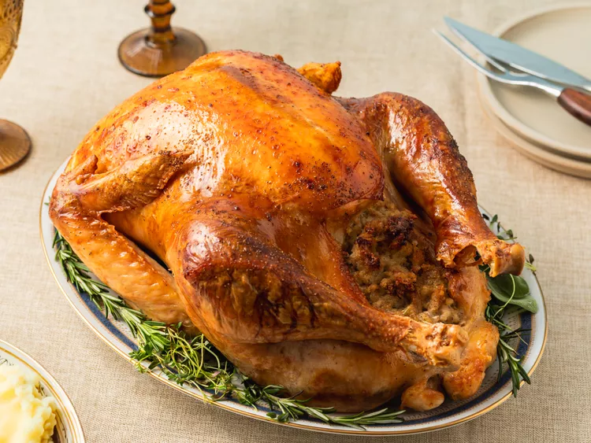

Turkey

Description
Simple roast turkey just like grandma used to make. Seasoned with salt and pepper and basted with turkey stock, the flavors of the turkey really stand out. Stuff with your favorite dressing.
Ingredients
- 1 (18 pound) whole turkey
- 8 cups prepared stuffing
- ½ cup unsalted butter, softened
- salt and freshly ground black pepper to taste
- 1 ½ quarts turkey stock, divided
Steps
- Step 1:
Gather all ingredients. Preheat the oven to 325 degrees F (165 degrees C). Place a rack in the lowest position of the oven.
- Step 2:
Remove turkey neck and giblets. Rinse turkey and pat dry with paper towels, and place breast-side up, on a rack in a roasting pan.
- Step 3:
Loosely fill turkey cavity with stuffing. Rub skin with butter, then season with salt and pepper.
- Step 4:
Pour 2 cups of turkey stock into the roasting pan.
- Step 5:
Loosely tent turkey with aluminum foil, and roast turkey for 2 ½ hours, basting with pan juices every 30 minutes. When drippings evaporate, add remaining stock to the pan, 1 to 2 cups at a tim
- Step 6:
Remove foil and continue roasting until a meat thermometer inserted in thickest part of thigh reads 165 degrees F (75 degrees C), about 1 ½ hours more..
- Step 7:
Transfer turkey to a large serving platter. Let stand for 20 to 30 minutes before carving.
- Step 8:
Serve and enjoy!